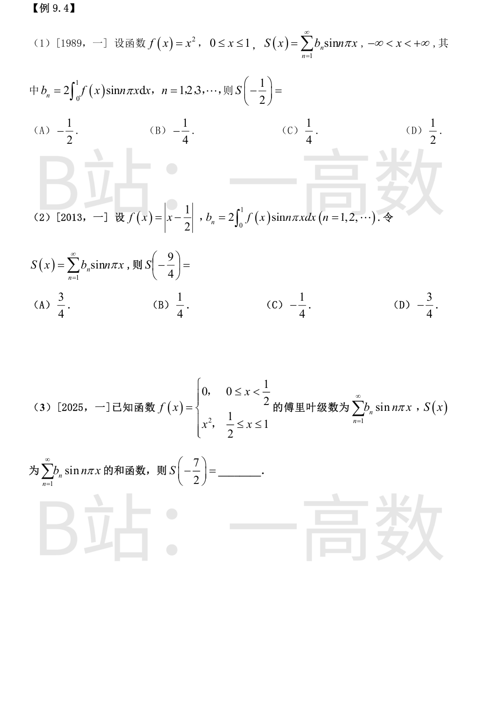
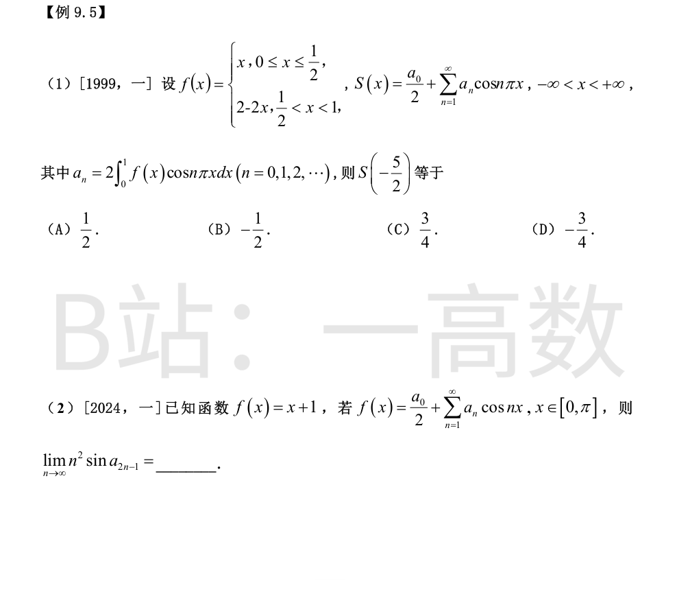
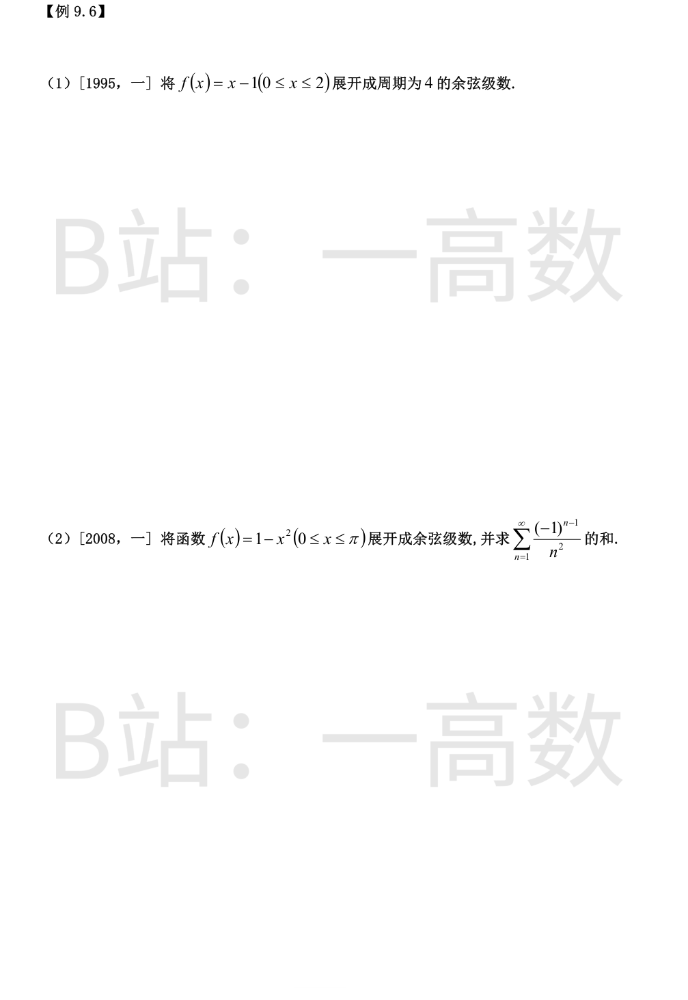

b_n 恰为 f 在 [0,1] 上的正弦（奇延拓、周期 2）傅里叶系数，S 为其傅里叶级数之和函数。
x=1/2 是 f 的连续点，且在延拓后仍连续，故 S(1/2)=f(1/2)=1/4。
S 为奇函数：S(-1/2)=-S(1/2)=-1/4。选 B。
S 是 f 的奇延拓（周期 2）的正弦级数和函数。
周期性：S(-9/4)=S(-9/4+4)=S(-1/4)；奇性：S(-1/4)=-S(1/4)。
x=1/4 为连续点：S(1/4)=f(1/4)=|1/4-1/2|=1/4。
故 S(-9/4)=-1/4，选 C。
S 是 f 的奇延拓（周期 2）正弦级数和函数。周期 2：
$$S\left(-\frac72\right)=S\left(-\frac72+4\right)=S\left(\frac12\right)$$
x=1/2 是 f 的间断点：f(1/2^-)=0，f(1/2^+)=(1/2)²=1/4。由狄利克雷收敛定理：
$$S\left(\frac12\right)=\frac{0+\frac14}{2}=\frac18$$
故 S(-7/2)=1/8。

a_n 是 f 的余弦（偶延拓、周期 2）傅里叶系数，S 为其和函数。
偶延拓且周期 2：S(-5/2)=S(-5/2+2)=S(-1/2)=S(1/2)（偶函数）。
x=1/2 处 f 间断：左值 f(1/2^-)=1/2，右值 \lim_{x\to(1/2)^+}(2-2x)=1。由狄利克雷定理：
$$S\left(\frac12\right)=\frac{\frac12+1}{2}=\frac34$$
故 S(-5/2)=3/4，选 C。
$$a_n=\frac{2}{\pi}\int_0^\pi(x+1)\cos nx\,dx=\frac{2}{\pi}\left[\frac{(-1)^n-1}{n^2}\right]$$
（因 ∫_0^π x cos nx dx = ((-1)^n-1)/n²，∫_0^π cos nx dx = 0。）
于是 a_{2n-1} = -\frac{4}{\pi(2n-1)^2}，a_{2n}=0。
a_{2n-1}→0，用 sin u ~ u：
$$n^2\sin a_{2n-1}\sim n^2\cdot\left(-\frac{4}{\pi(2n-1)^2}\right)\longrightarrow-\frac{4}{\pi}\cdot\frac14=-\frac{1}{\pi}$$

周期 2l=4，l=2，作偶延拓。系数：
$$a_0=\frac{2}{l}\int_0^l f(x)dx=\int_0^2(x-1)dx=\left[\frac{x^2}{2}-x\right]_0^2=0$$
n≥1（换元 u=nπx/2）：
$$a_n=\int_0^2(x-1)\cos\frac{n\pi x}{2}dx=\frac{2}{n\pi}\left[\frac{2}{n\pi}\int_0^{n\pi}u\cos u\,du-\int_0^{n\pi}\cos u\,du\right]=\frac{2}{n\pi}\cdot\frac{2}{n\pi}\left[(-1)^n-1\right]$$
（∫_0^{nπ}u cos u du = [u sin u+cos u]_0^{nπ} = (-1)^n-1；∫_0^{nπ}cos u du = 0。）
即 a_n=\frac{4[(-1)^n-1]}{n^2\pi^2}：偶数 n 为 0，奇数 n 为 -8/(n²π²)。
f 连续且偶延拓处处连续，级数在 [0,2] 上收敛于 f：
$$f(x)=-\frac{8}{\pi^2}\sum_{k=1}^{\infty}\frac{1}{(2k-1)^2}\cos\frac{(2k-1)\pi x}{2},\quad 0\le x\le2$$
偶延拓，l=π。
$$a_0=\frac{2}{\pi}\int_0^\pi(1-x^2)dx=\frac{2}{\pi}\left(\pi-\frac{\pi^3}{3}\right)=2-\frac{2\pi^2}{3}$$
分部积分：
$$\int_0^\pi x^2\cos nx\,dx=\left[x^2\frac{\sin nx}{n}\right]_0^\pi-\frac{2}{n}\int_0^\pi x\sin nx\,dx=-\frac{2}{n}\left[-\frac{x\cos nx}{n}\right]_0^\pi=\frac{2(-1)^n}{n^2}$$
（∫_0^π x sin nx dx = [-x cos nx/n + sin nx/n²]_0^π = -π(-1)^n/n。）
$$a_n=\frac{2}{\pi}\left(0-\frac{2(-1)^n}{n^2}\right)=\frac{4(-1)^{n+1}}{\pi n^2}$$
f 连续、偶延拓处处连续，故在 [0,π] 上：
$$f(x)=1-\frac{\pi^2}{3}+\frac{4}{\pi}\sum_{n=1}^{\infty}\frac{(-1)^{n+1}}{n^2}\cos nx$$
令 x=0（f(0)=1）：
$$1=1-\frac{\pi^2}{3}+\frac{4}{\pi}\sum_{n=1}^{\infty}\frac{(-1)^{n+1}}{n^2}\ \Rightarrow\ \sum_{n=1}^{\infty}\frac{(-1)^{n-1}}{n^2}=\frac{\pi^2}{12}$$